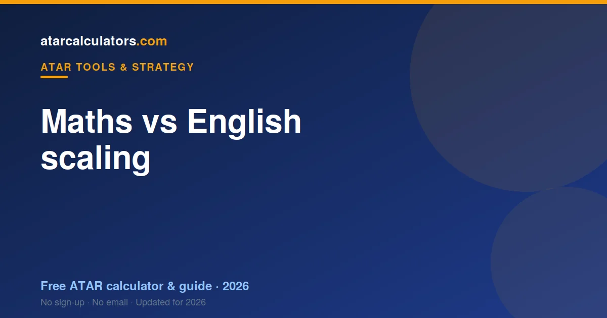

Higher maths (Extension and Specialist) generally scales up more strongly than English. But English is compulsory in most states and often must count towards your ATAR, so you cannot simply swap it out. The best strategy is strong marks in both, choosing the maths and English levels you can each do well in, rather than treating one as superior.
Key takeaways
- Higher maths generally scales up more strongly than English.
- But English is compulsory in most states and often must count.
- You cannot swap English out for a higher-scaling subject.
- The best strategy is strong marks in both.
- Choose the maths and English levels you can each do well in.
- A strong English mark still contributes well to your ATAR.

How they compare on scaling
On scaling alone, the higher maths courses generally come out ahead of English. Extension and Specialist maths sit among the top scalers, while English courses typically scale around the middle.
That is the source of the “maths is worth more” belief. On a like-for-like mark, a higher maths course tends to scale up more than an English course.
But this comparison is incomplete, because you do not usually get to choose between maths and English. English is compulsory, so the real question is how to do well in both.
Why higher maths scales up
Higher maths scales strongly for the same reason as any top scaler: cohort strength. Extension and Specialist maths draw small, capable groups of students who tend to be strong across their whole program.
It is not the difficulty of the algebra that lifts the scaling; it is the strength of the students. Strip away that cohort and the scaling would not be so high. See how scaling works.
Is English scaled down?
English is not “scaled down” as a punishment. It scales around the middle because it is taken by nearly everyone, so its cohort is very broad. A broad cohort produces moderate scaling.
The more academic English courses, such as advanced and extension English, draw stronger cohorts and scale a little better than the standard course. So within English, the level you take matters.
And crucially, a strong mark in English still produces a solid scaled mark. Ranking near the top of English is valuable, even if the subject as a whole scales moderately.
English is compulsory
The decisive point is that English is compulsory in most states, and in several it must be one of the subjects that counts towards your ATAR. So you cannot swap it out for a higher-scaling subject.
This reframes the whole question. It is not “maths or English?” but “how do I do well in English, which I have to take, while also doing well in my other subjects?”
So English is not competing with maths for a slot. It is a fixed part of your program, and your job is to rank as high in it as you can.
Is maths required for a high ATAR?
No, maths is not required for a high ATAR, unless a course you want lists it as a prerequisite. Plenty of students reach very high ATARs without the highest maths, through other strong-scaling subjects.
That said, if you are capable in maths, the higher courses are a strong asset, both for scaling and as prerequisites for science, engineering and commerce. So take maths if it suits you, not out of fear that you must.
Which English course scales best?
Within English, the more academic courses tend to scale a little better, because they draw stronger cohorts. But the same rule applies as everywhere: take the English course you can do best in.
A strong mark in a standard English course can beat a weak mark in an advanced one once scaling is applied. Match the course to your ability, rather than chasing the small scaling difference.
Which maths course to take
For maths, the honest guide is your ability. If you are strong, the higher courses scale well and open doors. If maths is a struggle, a lower maths course you can pass comfortably may serve you better than a higher one you sink in.
Remember that a high-scaling maths course only helps if you rank well in it. So choose the level where you can perform, not the highest level available.
Why it is not either-or
The framing of “maths vs English” is misleading, because you are not choosing between them. English is compulsory, and maths is optional but valuable if it suits you. The best strategy is strong marks in both.
So rather than ask which is worth more, ask how to rank well in your compulsory English and in the maths level that fits you. Do both, and you get the benefit of each.
Compare them yourself
See how your own marks in maths and English would scale. Our ATAR scaling calculator uses official figures to show the scaled mark for each, so you can compare directly.
In most cases, the answer is not to pick one over the other, but to aim for strong marks in both. The calculator makes that concrete.
A worked comparison
Consider a concrete case. Suppose you score around 88 in an English course and around 88 in Mathematical Methods. After scaling, the maths mark may end up a few points higher than the English mark, reflecting the stronger maths cohort.
Now suppose instead you score 88 in English but only 72 in a higher maths course that does not suit you. Here the English mark, once scaled, likely beats the struggling maths mark. The scaling advantage of maths cannot bridge a 16-mark gap in performance.
So the comparison always comes back to your rank. Where you perform equally, maths tends to scale a little better; where you perform worse, that advantage disappears quickly.
The role of English extension
Students strong in English should note the extension English courses, which scale better than standard English because they draw stronger cohorts. For a capable English student, an extension course can be a genuinely well-scaling subject.
So the English side of the comparison is not fixed. Just as maths spans a range from general to specialist, English spans standard to extension, with the more academic levels scaling higher. Match the level to your ability.
Maths for non-maths careers
You do not need the highest maths for many university pathways, including law, most humanities, and a range of health and social science courses. So if maths is a struggle, you are not locked out of a high ATAR or a good course.
Take the maths level you can perform in, and lean on your stronger subjects for scaling. A student strong in English, humanities or a language can reach a very high ATAR without the top maths course.
The takeaway
The takeaway is to stop treating maths and English as rivals. English is compulsory, so aim to rank well in it. Maths is optional but valuable if it suits you, so take the level you can perform in.
Do both well, and you capture the benefit of each. The strongest ATARs come from ranking well across your whole program, not from betting everything on one subject over another.
Common questions
Does maths scale higher than English?
Generally, yes. Higher maths (Extension and Specialist) scales up more strongly than English, which scales around the middle. But this is because higher maths draws a stronger cohort, not because English is penalised.
Is English scaled down?
Not as a punishment. English scales around the middle because it is taken by nearly everyone, giving it a very broad cohort. A strong mark in English still produces a solid scaled mark.
Is maths required for a high ATAR?
No, unless a course you want lists it as a prerequisite. Many students reach high ATARs without the highest maths. But if you are capable in maths, the higher courses are a strong asset.
Which English course scales best?
The more academic English courses, such as advanced and extension English, tend to scale a little better because they draw stronger cohorts. But take the English course you can do best in, since your rank matters most.